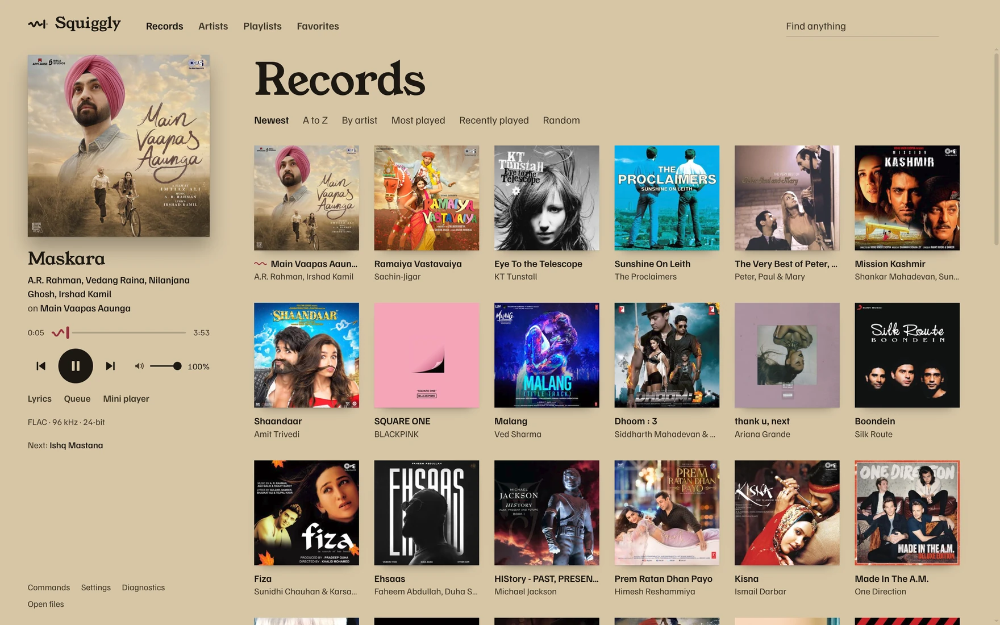

Squiggly
Squiggly Version 0.1.0 Windows 10/11 · Fedora · a browser version for phones MIT
A desktop player for Navidrome that asks for the original file, plays it through libmpv, and leaves the signal alone.1

Side A
- Library Records, artists, playlists, favorites, and search across them. Automatic playlists by genre, by decade, and from what's new. Radio from any song, record, or artist.
- Queue Edit the queue and your playlists. The queue follows you between devices through the server.
- Lyrics Synced lyrics fill in word by word. They come from your server.5
- Desktop Mini player, tray, media keys, and the system media controls: the Windows media flyout, MPRIS on Linux. Files from your computer play with their own cover and tags.
-
Yours to change
Ctrl+K finds any action. Keys live in
keybindings.json, colour themes are files, and extensions are folders of TypeScript in the config folder that reload when you save.
No EQ, no crossfade, no loudness levelling, no ReplayGain.
Side B


Personnel
- Playback
- libmpv, audio only, built from source.3
- Server
- Navidrome, or anything that speaks OpenSubsonic.
- Sign-in
- Remembered, with the password kept only as your system encrypts it.
- Updates
- From GitHub releases. Nothing about you is sent.4
- Type
- Young Serif and Familjen Grotesk.
- Licence
- MIT. Made by Parth Thakre.
Available on
- Windows installerx64
- Windows portablex64, nothing to install
- Fedora RPMx86_64, pulls in mpv-libs
- SHA256SUMSto check the files above2
No server yet? Navidrome runs a public demo full of Creative Commons music: demo.navidrome.org, username demo, password demo. It's Navidrome's, shared by everyone, and may be slow or reset.